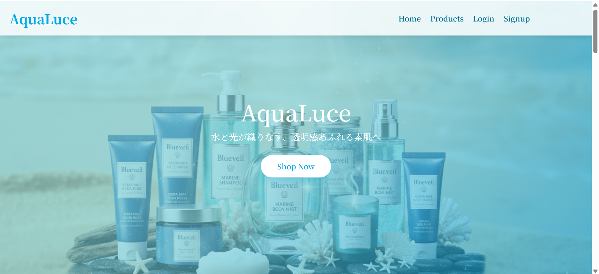
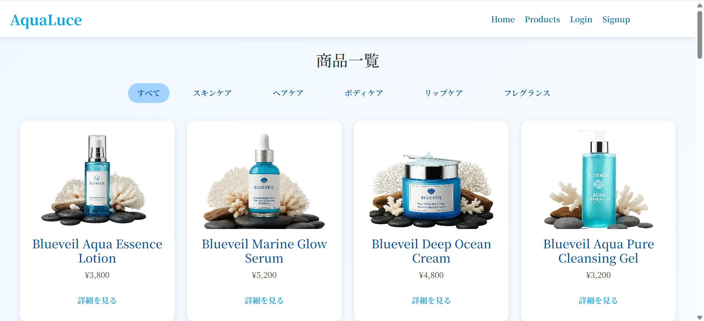
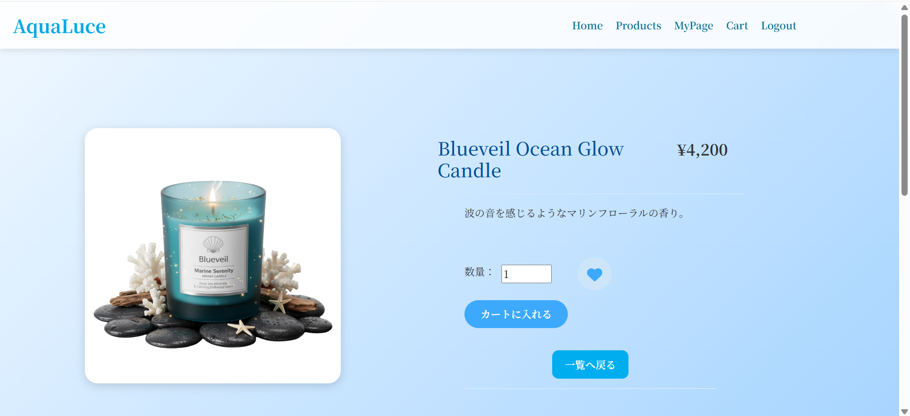
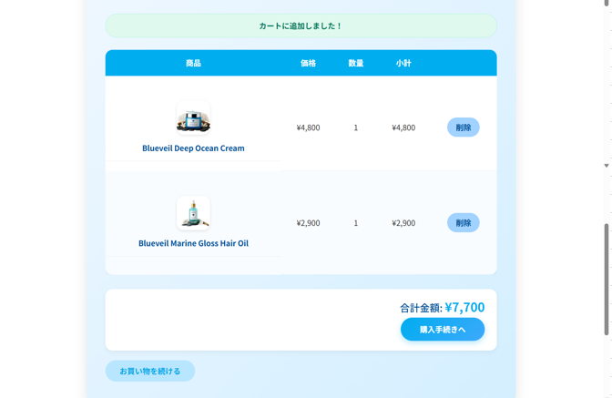

制作実績
化粧品サイト「AquaLuce」（Laravel / 開発中）
個人開発。水と光をテーマにしたデザインで、レスポンシブ対応。 商品一覧、商品詳細、カート機能、お気に入り機能を実装済み。レビュー投稿・問い合わせ機能を予定。
GitHubプレビュー
   

Webエンジニア / 個人開発者
現在は社内受託案件でPHP(Laravel)を使った開発に従事。 個人開発として化粧品サイト「AquaLuce」を制作中。
技術スタック: Ruby on Rails, PHP(Laravel), C#, SQL, Oracle, HTML, CSS, JavaScript, Bootstrap
個人開発。水と光をテーマにしたデザインで、レスポンシブ対応。 商品一覧、商品詳細、カート機能、お気に入り機能を実装済み。レビュー投稿・問い合わせ機能を予定。
GitHub